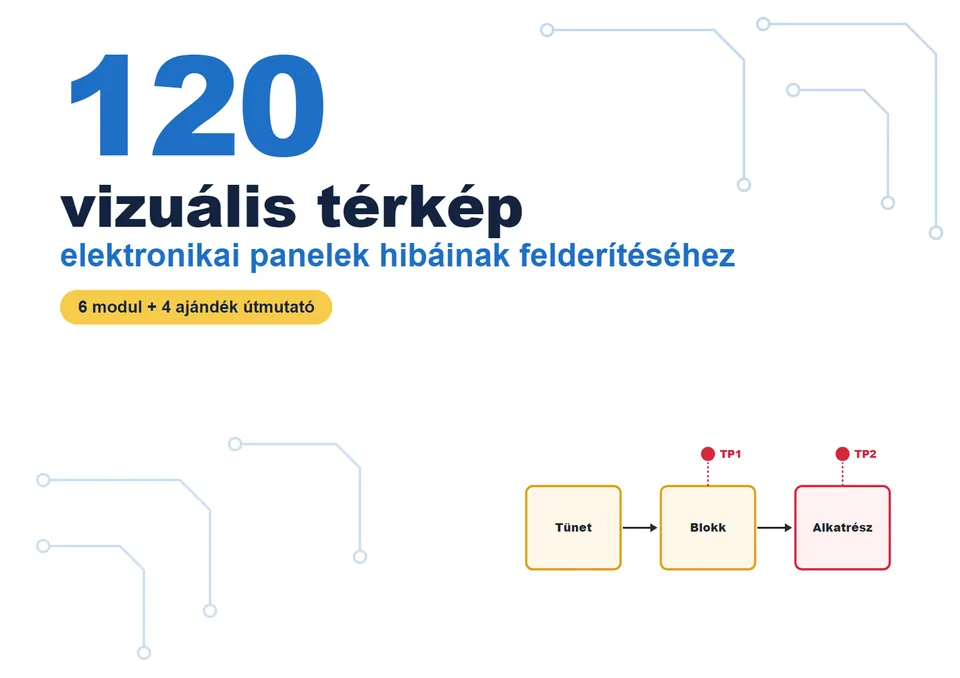
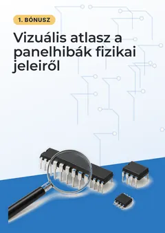
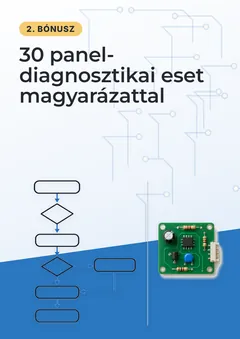
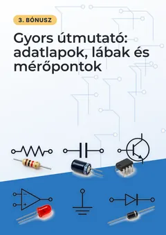
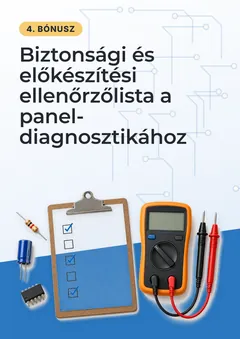

120 vizuális térkép elektronikai panelek hibáinak felderítéséhez
Minden térkép egy tünet egyetlen oldalon. Megnyitod a munkapadon, blokkokra bontod a NYÁK-ot, a jelölt pontokon mérsz, és összeveted a táblázattal.
⬇ PDF letöltése Megnyitás a böngészőben →A te 4 bónuszod

Vizuális atlasz a panelhibák fizikai jeleiről
Sok hiba már mérés előtt látszik. Ez az atlasz 19 fizikai jelet gyűjt össze: hogyan ismerd fel őket, melyik alkatrészre utalnak általában, és mit mérj a megerősítéshez.

30 panel-diagnosztikai eset magyarázattal
Minden oldal egy teljes NYÁK egy valódi műhelyi hibával: mit csinált, mit néztek meg, mit mértek, és hol volt a hiba. Az egyszerűtől a nehézig haladnak.

Gyors útmutató: adatlapok, lábak és mérőpontok
Ez az útmutató nem rajzolvasáshoz kell: megmutatja, milyen feszültséget várj az egyes lábakon, és hova tedd a csúcsokat a valódi NYÁK-on.

Biztonsági és előkészítési ellenőrzőlista a panel-diagnosztikához
NYÁK megnyitása és minden bekapcsolás előtt nézd át a megfelelő oldalt. Így nem veszíted el az eredeti hibát, és nem okozol újat.
Hol kezdd
- Töltsd le az 5 PDF-et, és mentsd el a telefonodra vagy a számítógépedre.
- Ha még sosem diagnosztizáltál NYÁK-ot, olvasd el az egész 1. modult: ott van a módszer, amelyre az összes többi térkép épül.
- Ha már tudod, mit csinál a készülék, keresd meg a tünetet a tartalomjegyzékben: nem kapcsol be (2. modul), kapcsolóüzemű táp (3. modul), bekapcsol, de nem működik (4. modul), egy kimenet nem működik (5. modul), vagy a hiba jön-megy (6. modul).
Mentsd el ezt a linket
Ez az oldal bármikor hozzáférést ad az anyaghoz.
Következő lépés
A módszer a tiéd. A következő lépés, hogy használd: vegyél elő egy félretett NYÁK-ot, kezdd az 1. térképpel, és kövesd a tünet útját lépések kihagyása nélkül.